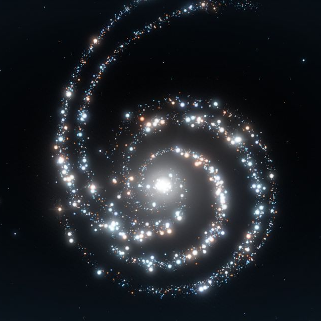

GPT-6Astra
Your presence, among the stars.
DISCORD PRESENCE
A little signal.
A whole galaxy.
Show your friends when you’re using GPT-6 Astra.
Start manually, or detect recent Astra activity in Codex.
Starting local companion…
Connect to Discord ＋
- Run the companion. Download and extract the Windows ZIP. Install Node.js 24 or later if needed, then double-click Start Astra Presence.cmd. It opens the working controls on your computer.
- Create your activity. Sign in to the Discord Developer Portal, create an application named GPT-6 Astra, and copy its Application ID.
- Add the swirl. Under Rich Presence → Art Assets, upload this galaxy picture with the asset name astra_galaxy.
- Share your session. Save the Application ID in the local companion. Open Discord desktop, enable activity sharing in Discord’s settings, and choose Start session or Automatic.
- Make it hands-free. After setup, double-click Enable Automatic Startup.cmd once. The companion starts quietly when you sign into Windows. Keep the extracted folder in place and Discord desktop running.
{kind=link}
No bot token, OpenAI API key, payment method, or server hosting needed. Each person connects their own Discord desktop.